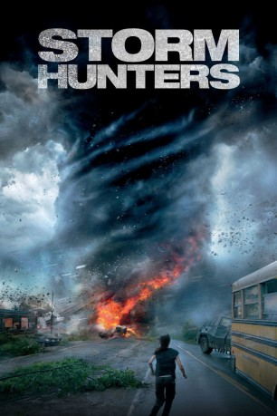

gesehen am 27.08.2015
gesehen am 27.08.2015Alternativ: Into the Storm gesehen am 27.08.2015
 
 IMDB-Wertung: 5.8 / 10
IMDB-Wertung: 5.8 / 10  Metascore:
Metascore: 
In kürzester Zeit jagt eine ganze Reihe von Tornados über die Kleinstadt Silverton hinweg und richtet erheblichen Schaden an. Allerdings erfährt die Gemeinde, dass das Schlimmste erst noch bevorsteht. Die Einwohner gehen sehr unterschiedlich mit dieser beunruhigenden Ankündigung um. Zwar suchen die meisten Schutz in Häusern und Kellern, doch eine kleine Gruppe professioneller Sturmjäger macht sich auf die Jagd nach dem Hurrikan, der die vielen Tornados ausgelöst hat. Der Dokumentarfilmer Pete Moore, die Meteorologin Allison Stone sowie die Kameramänner Lucas, Daryl und Jacob haben nur ein Ziel: die Naturgewalt für die nächste sensationelle Dokumentation zu filmen. Währenddessen sucht Trey mit seinem alleinerziehenden Vater Gary Morris seinen Bruder Donnie, der mit seiner Freundin Kaitlyn spurlos verschwunden ist. Und das im Angesicht des drohenden Desasters…
Jahr: 2014
Dauer: 89 Minuten
FSK: 12
Land: USA Studio: Warner Bros.Tonspuren: - ,
Untertitel: Deutsch,
Auflösung: 1080p (1920x1080) Größe: 10137 MB
Regisseur: Steven Quale
Drehbuch: John Swetnam
Soundtrack: Brian Tyler
Darsteller:
 Richard Armitage als Gary
Richard Armitage als Gary Sarah Wayne Callies als Allison
Sarah Wayne Callies als Allison Matt Walsh als Pete
Matt Walsh als Pete Arlen Escarpeta als Daryl
Arlen Escarpeta als Daryl Jeremy Sumpter als Jacob
Jeremy Sumpter als Jacob Scott Lawrence als Principal Thomas Walker
Scott Lawrence als Principal Thomas Walker Wayne Brinston als Towns Person , uncredited
Wayne Brinston als Towns Person , uncredited Dennis Doyle Jr. als Townsperson , uncredited
Dennis Doyle Jr. als Townsperson , uncredited Diezel Ramos als Townsperson , uncredited
Diezel Ramos als Townsperson , uncreditedDatei: X:\2014(N-Z)\Storm Hunters (2014, FSK12, 1920x1080).mkv seit 27.04.2015
Festplatte: HD 2013(I-Z)-2014(A-Z)
 Es gibt insgesamt 163 Filme in der Gruppe '2014(N-Z)'
Es gibt insgesamt 163 Filme in der Gruppe '2014(N-Z)'